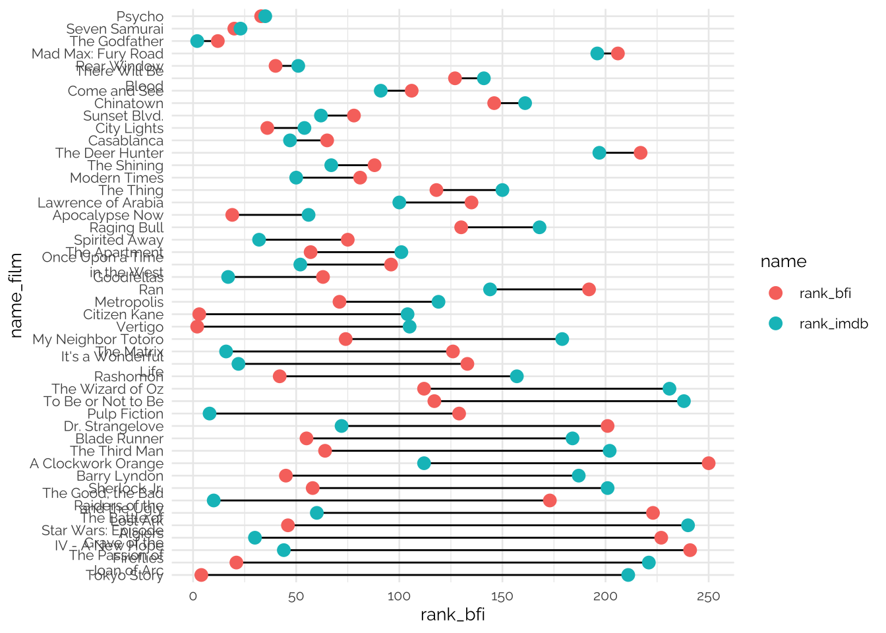

library(ggplot2)
library(dplyr)
library(tidyr)
library(showtext)
font_add_google("Raleway", "Raleway")
showtext_auto()
films <- qs::qread(here::here("static/data/greatest_movies.qs"))
dict <- tribble(
~source, ~list_type,
"afi", "critics",
"bfi", "critics",
"ebert", "critics",
"empire", "public",
"variety", "critics",
"timeout", "critics",
"bbc_american", "critics",
"bbc_women", "critics",
"bbc_foreign", "critics",
"bbc_21st", "critics",
"imdb", "public",
"rolling_stones_scifi", "critics",
"letterboxd", "public",
"criticker", "public"
)
films <- left_join(films, dict, by = "source")Recency Bias
Recency bias is a well known cognitive bias, also known as memory bias. It describes the human tendency to attribute a greater importance to more recent events than to events that occurred further in time. This happens when travelers believe an airplane crash is more likely to occur after seeing news about an airplane accident; when investors believe the market will keep growing following a recent string of positive news; when swimmers believe that shark attacks will be more likely after watching a documentary about sharks.
More recently, recency bias has become a pervasive feature of online culture. In a never ending cycle of “the new is always better”, social media influencers and the media more broadly are constantly claiming that this new thing is actually the best thing of all time. Public opinion is slowly but surely catching up to this in sports discussions, as GOAT (greatest of all time) discussion fatigue is increasing among fans.

It’s really convenient that all of the GOATs, of all sports, just happen to play and perform at their best during the first 20 years of the most recent century: just in time for you to watch them.
For several different reasons, human’s tend to put a greater weight onto more recent events when evaluating pretty much anything. This is partly due to how our memory works but sometimes is due to availability. When something new happens, social media is quickly extracts all possible content from it and then moves on to the next thing.
Recency Bias in Movies?
The data
Critics vs Public
imdb <- filter(films, source == "imdb")films <- films |>
mutate(decade = year - (year %% 10))
imdb <- filter(films, source == "imdb")
imdb_count <- count(imdb, decade)
p1 <- ggplot(imdb_count, aes(decade, n)) +
geom_col(fill = "#deb522") +
geom_text(aes(y = n - 3, label = n), family = "Raleway") +
geom_hline(yintercept = 0) +
scale_x_continuous(
breaks = seq(1910, 2020, 10),
labels = \(x) paste0(substr(x, 3, 4), "'s"),
limits = c(1910, NA)) +
labs(
subtitle = "IMDB Top 250 (voted by general online public)",
x = NULL,
y = NULL
) +
theme_minimal(base_family = "Raleway") +
theme(
panel.grid.minor = element_blank(),
panel.grid.major.x = element_blank()
)
bfi <- filter(films, source == "bfi")
bfi_count <- count(bfi, decade)
p2 <- ggplot(bfi_count, aes(decade, n)) +
geom_col(fill = "#000000") +
geom_text(aes(y = n - 3, label = n), family = "Raleway", color = "white") +
geom_hline(yintercept = 0) +
scale_x_continuous(
breaks = seq(1910, 2020, 10),
labels = \(x) paste0(substr(x, 3, 4), "'s")) +
labs(
subtitle = "BFI Greatest Films (voted by movie critics)",
x = NULL,
y = NULL
) +
theme_minimal(base_family = "Raleway") +
theme(
panel.grid.minor = element_blank(),
panel.grid.major.x = element_blank()
)
library(patchwork)
panel <- p1 / p2
final_plot <- panel + plot_annotation(
title = "Are movie critics driven by nostalgia, while recency\nbias shapes the public's perspective?",
subtitle = "Year of release of the 250 'greatest films of all time' by decade.",
caption = "Source: IMDB (IMDB Top 250, April 2024), BFI (The Greatest Films of All Time, 2022)") &
theme(
plot.margin = margin(5, 10, 5, 10, "pt"),
plot.title = element_text(
size = 18,
family = "Raleway",
margin = margin(5.5, 0, 5.5, 10)),
plot.subtitle = element_text(
size = 12,
color = "gray20",
family = "Raleway",
margin = margin(2, 0, 5.5, 10)),
plot.caption = element_text(
family = "Raleway",
size = 10,
color = 'gray30'
),
axis.text.x = element_text(size = 12)
)final_plot
tab <- inner_join(
select(bfi, name_film, rank_bfi = rank),
select(imdb, name_film, rank_imdb = rank),
by = "name_film"
)
comp <- tab |>
mutate(
diff = rank_bfi - rank_imdb,
abs_diff = abs(diff),
name_film = if_else(
stringr::str_detect(name_film, "^Dr\\. Strangelove"),
"Dr. Strangelove",
name_film,
),
name_film = factor(name_film),
name_film = forcats::fct_reorder(name_film, -abs_diff),
is_critics = factor(if_else(diff < 0, 1L, 0L))) |>
arrange(desc(diff)) |>
filter(abs_diff > 100 | abs_diff < 50)
comp_long <- comp |>
tidyr::pivot_longer(cols = rank_bfi:rank_imdb)tab1 <- comp |>
filter(abs_diff < 50) |>
mutate(name_film = forcats::fct_reorder(name_film, rank_bfi)) |>
arrange(name_film)
tab1_long <- tab1 |>
tidyr::pivot_longer(cols = rank_bfi:rank_imdb) |>
mutate(
is_bfi = if_else(stringr::str_detect(name, "rank_bfi"), 1L, 0L),
is_bfi = factor(is_bfi)
)colors <- c("#deb522", "#2166ac")
ggplot(tab1) +
geom_segment(
aes(x = name_film, xend = name_film, y = rank_bfi, yend = rank_imdb)
) +
geom_point(
data = tab1_long,
aes(x = name_film, y = value, color = is_bfi),
size = 2
) +
geom_point(
data = tab1,
aes(x = name_film, y = -10, shape = is_critics, color = is_critics),
size = 2
) +
annotate(
"label",
x = "Psycho",
y = 80,
label = "Psycho is acclaimed\nby both audiences\nand critics.",
label.size = 0,
size = 2,
family = "Raleway"
) +
annotate(
"label",
x = "Metropolis",
y = 150,
label = "Metropolis is more\ncritics-favored.",
label.size = 0,
size = 2,
family = "Raleway"
) +
annotate(
"label",
x = "Raging Bull",
y = 210,
label = "Ran is more\nfavored by the public.",
label.size = 0,
size = 2,
family = "Raleway"
) +
scale_x_discrete(labels = \(x) stringr::str_wrap(x, 18)) +
scale_y_continuous(breaks = c(1, seq(50, 250, 50))) +
scale_color_manual(
name = "",
values = colors,
labels = c("IMDB", "BFI")
) +
scale_shape_manual(values = c(2, 6)) +
guides(shape = "none") +
coord_flip() +
labs(
title = "",
subtitle = "Samples of movies ranked by BFI x IMDB\n\n",
x = NULL,
y = "Rank (less is higher)"
) +
theme_minimal(base_family = "Raleway", base_size = 10) +
theme(
legend.position = c(0.08, 1.05),
legend.direction = "horizontal",
axis.text.y = element_text(hjust = 1)
)
tab2 <- comp |>
filter(abs_diff > 100) |>
mutate(name_film = forcats::fct_reorder(name_film, -rank_bfi)) |>
arrange(name_film)
tab2_long <- tab2 |>
tidyr::pivot_longer(cols = rank_bfi:rank_imdb) |>
mutate(
is_bfi = if_else(stringr::str_detect(name, "rank_bfi"), 1L, 0L),
is_bfi = factor(is_bfi)
)colors <- c("#deb522", "#2166ac")
ggplot(tab2) +
geom_segment(
aes(x = name_film, xend = name_film, y = rank_bfi, yend = rank_imdb)
) +
geom_point(
data = tab2_long,
aes(x = name_film, y = value, color = is_bfi),
size = 2
) +
geom_point(
data = tab2,
aes(x = name_film, y = -10, shape = is_critics, color = is_critics),
size = 2
) +
annotate(
"label",
x = "Citizen Kane",
y = 170,
label = "Tokyo Story is the most 'divisive' movie.\nRanked 4th by the BFI and 211th by IMDB.",
label.size = 0,
size = 2,
family = "Raleway"
) +
scale_x_discrete(labels = \(x) stringr::str_wrap(x, 18)) +
scale_y_continuous(breaks = c(1, seq(50, 250, 50))) +
scale_color_manual(
name = "",
values = colors,
labels = c("IMDB", "BFI")
) +
scale_shape_manual(values = c(2, 6)) +
guides(shape = "none") +
coord_flip() +
labs(
title = "",
subtitle = "Samples of movies ranked by BFI x IMDB\n\n",
x = NULL,
y = "Rank (less is higher)"
) +
theme_minimal(base_family = "Raleway", base_size = 10) +
theme(
legend.position = c(0.08, 1.05),
legend.direction = "horizontal",
axis.text.y = element_text(hjust = 1)
)
tab <- full_join(
select(bfi, name_film, rank_bfi = rank),
select(imdb, name_film, rank_imdb = rank),
by = "name_film"
)
tab |>
filter(is.na(rank_imdb)) |>
slice_min(rank_bfi, n = 20) |>
select(name_film, rank = rank_bfi)# A tibble: 20 × 2
name_film rank
<chr> <int>
1 Jeanne Dielman, 23, quai du commerce, 1080 Bruxelles 1
2 In the Mood for Love 5
3 Beau Travail 7
4 Mulholland Drive 8
5 Man with a Movie Camera 9
6 Sunrise 11
7 The Rules of the Game 13
8 Cléo from 5 to 7 14
9 The Searchers 15
10 Meshes of the Afternoon 16
11 Close-Up 17
12 Persona 18
13 Late Spring 22
14 Playtime 23
15 Do the Right Thing 24
16 Au hasard Balthazar 25
17 The Night of the Hunter 26
18 Shoah 27
19 Daisies 28
20 Portrait of a Lady on Fire 30tab |>
filter(is.na(rank_bfi)) |>
slice_min(rank_imdb, n = 20) |>
select(name_film, rank = rank_imdb)# A tibble: 20 × 2
name_film rank
<chr> <int>
1 The Shawshank Redemption 1
2 The Dark Knight 3
3 12 Angry Men 5
4 Schindler's List 6
5 The Lord of the Rings: The Return of the King 7
6 The Lord of the Rings: The Fellowship of the Ring 9
7 Forrest Gump 11
8 The Lord of the Rings: The Two Towers 12
9 Fight Club 13
10 Inception 14
11 Star Wars: Episode V - The Empire Strikes Back 15
12 One Flew Over the Cuckoo's Nest 18
13 Se7en 19
14 Interstellar 20
15 Dune: Part Two 21
16 The Silence of the Lambs 24
17 Saving Private Ryan 25
18 City of God 26
19 Life Is Beautiful 27
20 The Green Mile 28ggplot(comp) +
geom_segment(
aes(x = name_film, xend = name_film, y = rank_bfi, yend = rank_imdb)
) +
geom_point(
data = comp_long,
aes(x = name_film, y = value, color = name),
size = 3
) +
scale_x_discrete(labels = \(x) stringr::str_wrap(x, 18)) +
coord_flip() +
theme_minimal(base_family = "Raleway", base_size = 10) +
theme(
axis.text.y = element_text(hjust = 1)
)
# imdb_bfi |>
# bind_rows() |>
# left_join(dim_title, by = c("name_film" = "primaryTitle", "year" = "startYear")) |>
# left_join(ratings, by = "tconst") |>
# filter(is.na(averageRating))
#
# clean_bfi |>
# mutate(decade = year - (year %% 10)) |>
# ggplot(aes(x = decade)) +
# geom_bar()
#
# clean_imdb |>
# mutate(decade = year - (year %% 10)) |>
# ggplot(aes(x = decade)) +
# geom_bar()
#
# ggplot(clean_empire, aes(x = year)) +
# geom_histogram(bins = 12)
#
#
# ggplot(clean_bfi, aes(x = year)) +
# geom_histogram(bins = 12, color = "white")
#
# ggplot(clean_imdb, aes(x = year)) +
# geom_histogram(bins = 15)
#
# ggplot(clean_variety, aes(x = year)) +
# geom_histogram(bins = 11, color = "white") +
# geom_hline(yintercept = 0) +
# theme_minimal() +
# theme(
# panel.grid.minor = element_blank()
# )
#
# hist(clean_variety$year, breaks = "fd")
#
# ggplot(clean_afi, aes(x = year)) +
# geom_histogram(bins = 15)
#
# ggplot(clean_empire, aes(x = year)) +
# geom_histogram(bins = 15)
#
# ggplot(clean_ebert, aes(x = year)) +
# geom_histogram(bins = 15)
#
#
#
# ggplot(clean_abracine, aes(x = year)) +
# geom_histogram(bins = 15)
#
# clean_empire |>
# mutate(
# decade = year - (year %% 10)
# ) |>
# ggplot(aes(x = decade, y = averageRating, group = decade)) +
# geom_violin()
#
#
# clean_empire |>
# mutate(
# decade = year - (year %% 10)
# ) |>
# ggplot(aes(x = decade, y = averageRating, group = decade)) +
# geom_count()
#
# clean_empire |>
# filter(averageRating < 7) |>
# arrange(averageRating)
# Colors
# imdb = "#deb522"
# variety = "#1a282f", "#546464"
# bfi = "#000000"
# empire = "#ff0000"
#
# imdb_afi <- imdb_afi[[1]]
#
# imdb_bfi <- bind_rows(imdb_bfi)
#
# dat <- list(imdb = clean_imdb, empire = imdb_empire, afi = imdb_afi, bfi = imdb_bfi, variety = imdb_variety, timeout = imdb_timeout)
#
# dat <- bind_rows(dat, .id = "source")
#
# dat <- dat |>
# mutate(
# source = factor(
# source,
# levels = c("afi", "bfi", "timeout", "variety", "empire", "imdb"),
# labels = c("AFI", "BFI", "TimeOut", "Variety", "Empire", "IMDB"))
# )
#
# highlight_low = dat |>
# group_by(source) |>
# slice_min(rating, n = 3)
#
# ggplot(dat, aes(source, rating, color = source)) +
# geom_jitter(width = 0.4, alpha = 0.75) +
# ggrepel::geom_text_repel(data = highlight_low, aes(label = name_film), size = 2) +
# guides(color = "none") +
# theme_minimal()
#
#
#
# library(ggridges)
#
# ggplot(dat, aes(year, source, fill = source)) +
# geom_density_ridges(alpha = 0.5) +
# scale_x_continuous(limits = c(1900, 2024)) +
# guides(fill = "none") +
# theme_minimal()